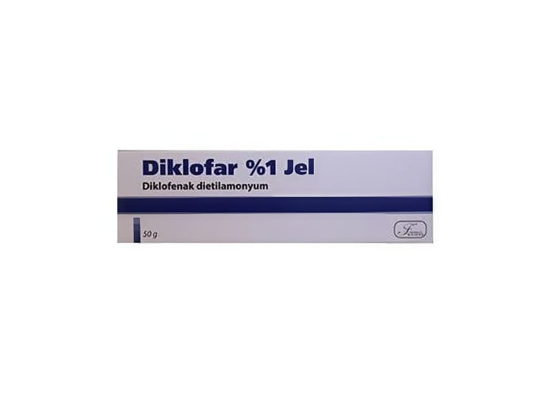

Diklofar %1 Jel ,50 g Tüp

Ne için kullanılır
KT · Bölüm 1• DİKLOFAR etkin madde olarak diklofenak dietilamonyum içeren, jel formunda bir ilaçtır. • DİKLOFAR topikal kullanılan non-streoidal antiinflamafuvar preparatları olarak adlandırılan bir ilaç grubuna dahildir. Yalnızca harici kullanım içindir. • DİKLOFAR, 50 g'lık tüpler ile kullanıma sunulmaktadır. 1/6
DİKLOFAR yetişkinlerde - Burkulma, ezilme, incinme gibi kazalar ya da spor yaralanmalarının neden olduğu ağrı, iltihaplanma ve şişmede, - Yumuşak doku iltihaplanmalarında, - Bölgesel romatizma hastalıklarında kullanılır.